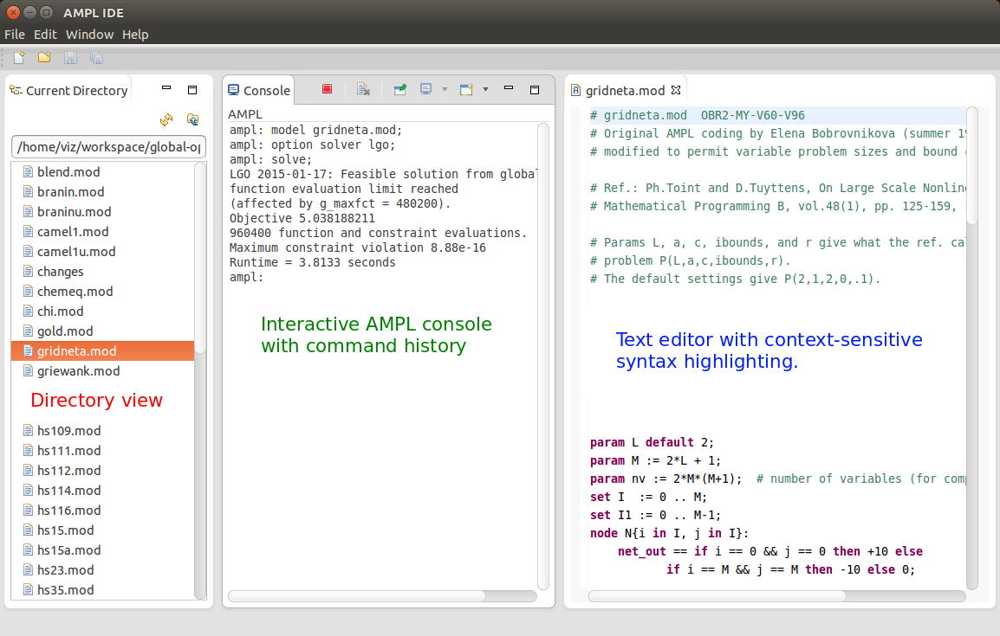
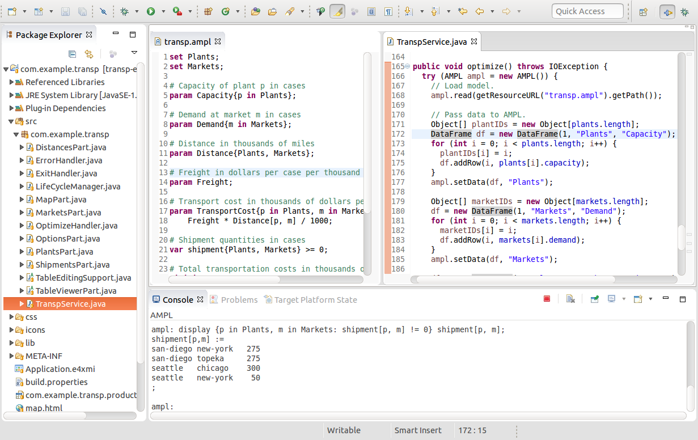
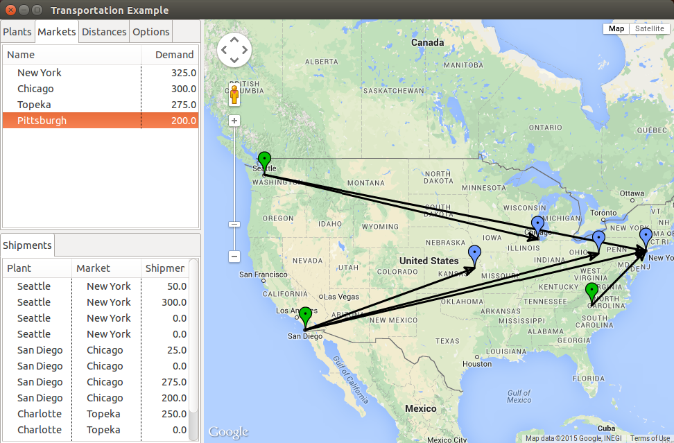
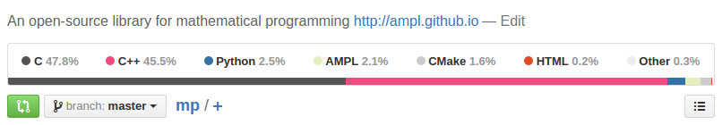
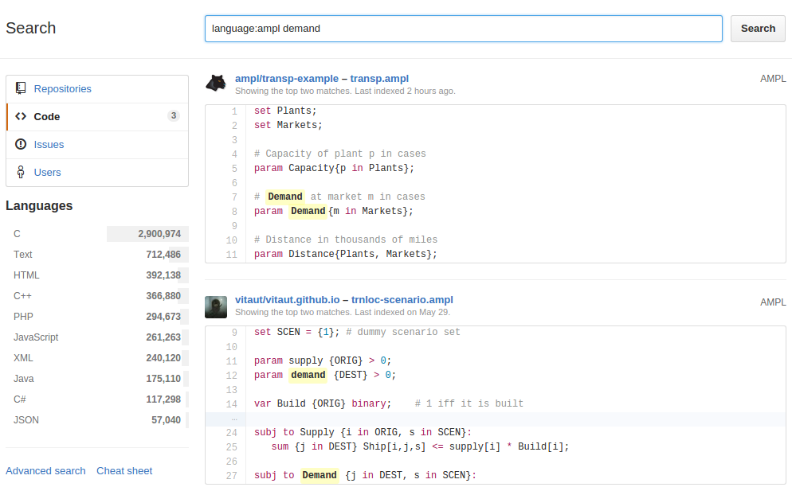
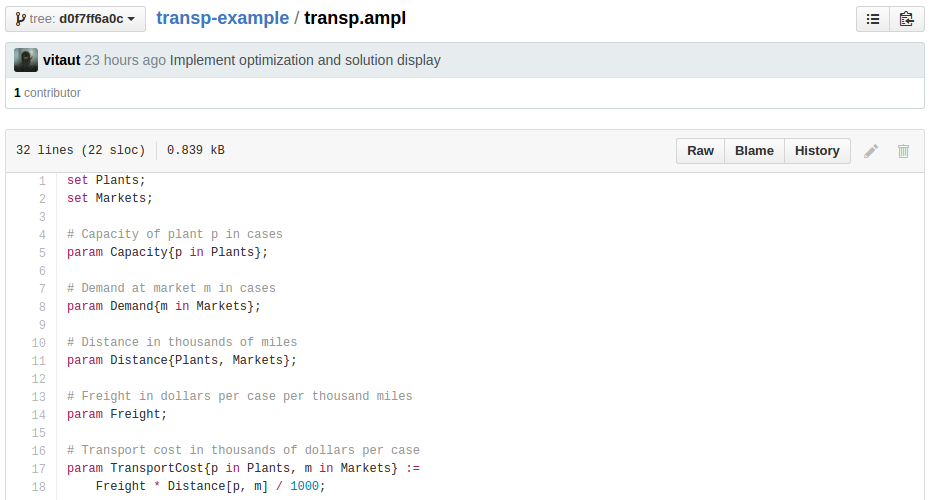

<!doctype html> <html lang="en">
<head>
  <meta charset="utf-8">

  <title>Update on AMPL Programming and Solver Interfaces</title>

  <meta name="author" content="Victor Zverovich">

  <meta name="apple-mobile-web-app-capable" content="yes" />
  <meta name="apple-mobile-web-app-status-bar-style" content="black-translucent" />

  <meta name="viewport" content="width=device-width, initial-scale=1.0, maximum-scale=1.0, user-scalable=no">

  <link rel="stylesheet" href="../common/reveal.js/css/reveal.css">
  <link rel="stylesheet" href="../common/reveal.js/css/theme/beige.css" id="theme">

  <!-- For syntax highlighting -->
  <link rel="stylesheet" href="../common/reveal.js/lib/css/zenburn.css">

  <!-- If the query includes 'print-pdf', include the PDF print sheet -->
  <script>
    if( window.location.search.match(/print-pdf/gi) ) {
      var link = document.createElement('link');
      link.rel = 'stylesheet';
      link.type = 'text/css';
      link.href = '../common/reveal.js/css/print/pdf.css';
      document.getElementsByTagName('head')[0].appendChild(link);
    }
  </script>

  <style>
  body {background: white;}
  comment {display: none;}

  .reveal h1,
  .reveal h2 {
    font-size: 200%;
    text-transform: none;
    text-align: center;
    margin: 0;
  }
  .reveal section:first-of-type {
    text-align: center;
  }
  .reveal section {
    text-align: left;
  }
  
  .reveal p {
    margin-top: 10px;
    margin-bottom: 10px;
  }

  .reveal .MathJax_Display {
    margin-top: 20px;
    margin-bottom: 20px;
  }
  .reveal .plot {
    box-shadow: 0 0 20px #888888;
    margin-left: auto; margin-right: auto;
  }
  
  .reveal .transp-image {
    display: block;
    margin-left: auto;
    margin-right: auto;
    border: none;
    box-shadow: none;
  }
  
  /* Fix nohighlight styles. */
  .reveal pre code { display: block; background: #3F3F3F; color: #DCDCDC; }
  
  /* Fix image styles. */
  .reveal section img { border: none; box-shadow: none; }
  
  img.float-right {
    clear:right;
    float:right;
  }

  div .new { color: red; }

  /* D3 styles */
  .node circle {
    fill: #fff;
    stroke: steelblue;
    stroke-width: 1.5px;
  }

  .node {
    font: 20px sans-serif;
  }

  .link {
    fill: none;
    stroke: #ccc;
    stroke-width: 1.5px;
  }
  
  .chart rect {
    fill: steelblue;
  }

  .chart .bar text {
    fill: white;
    font: 20px sans-serif;
    text-anchor: end;
  }
  .chart .axis text {
    font: 20px sans-serif;
    fill: black;
  }
  .chart .x.axis text {
    font: 16px sans-serif;
  }

  .chart .axis path,
  .chart .axis line {
    fill: none;
    stroke: #000;
    shape-rendering: crispEdges;
  }
  .chart .y.axis line,
  .chart .y.axis path {
    display: none;
  }
  </style>

  <script type="text/javascript" charset="utf-8" src="MathBox.js/vendor/domready.js"></script>
  <script type="text/javascript" charset="utf-8" src="MathBox.js/build/MathBox-bundle.js"></script>

  <link href="MathBox.js/base.css" rel="stylesheet" type="text/css" media="screen">  
</head>

<body>
<script src="../common/reveal.js/lib/js/head.min.js"></script>
<script src="../common/reveal.js/js/reveal.js"></script>


<div class="reveal">
<!-- Any section element inside of this container is displayed as a slide -->
<div class="slides">

<section data-markdown data-separator="---">
<script type="text/template">
Update on AMPL Programming and Solver Interfaces (and more)
===========================================================

Victor Zverovich, David Gay

<small>
[AMPL Optimization](http://www.ampl.com/)
</small>

<a href="https://sites.google.com/site/2015icsconference/">
<small>
<br/>
22nd International Symposium on Mathematical Programming,  
July 12-17, 2015, Pittsburgh, Pennsylvania
</small>
</a>

---

## AMPL Interfaces

* API
  - JVM languages: Java, Scala, etc.
  - Matlab
  - In development: C++
  - Planned: Python, .NET <br/>
    (but can already use Java API via [IKVM](http://www.ikvm.net/))

* IDE
  - Standalone [AMPL IDE](http://ampl.com/products/ide/)
  - AMPL support for Eclipse IDEs

* Solvers
  - Baron, LGO, LocalSolver

---

## AMPL Ecosystem


---

## AMPL IDE

* 
  [Eclipse](https://www.eclipse.org) - one of the most popular polyglot IDEs. Supports Java, C++, Python, Mathematica, R and more:
  $\LaTeX$, version control systems.

* [AMPL IDE](http://ampl.com/products/ide/) is based on Eclipse platform.

* <span class="new">New:</span> AMPL IDE is being updated to the latest Mars release of Eclipse.

* <span class="new">New:</span> AMPL support can be added to existing Eclipse IDE.

This allows building applications in your favorite programming
language with access to numerous solvers and modeling power of AMPL.

---

## Standalone AMPL IDE



--- 

## Adding AMPL Support to Eclipse IDE


---

## AMPL Perspective


---

## Accessing AMPL Console


---

## AMPL IDE + API + Eclipse


---

## Demo

* Eclipse 4 Rich Client Platform (RCP) application with optimization support via AMPL API.
* Built with
  - Eclipse for RCP and RAP Developers available from
    https://www.eclipse.org/downloads/.
  - AMPL Plug-in for Eclipse: http://ampl.com/dl/IDE/repository.
* Uses a simple transportation model by George Dantzig (1963).
* Source code is available on GitHub: https://github.com/ampl/transp-example

---

## Demo: Developer Perspective



---

## Demo: User Perspective



---

## Advantages of using AMPL with Eclipse

* Allows building optimization-enabled rich client applications

* Rapid development and prototyping of both model and application:
  fully working tranportation demo is ~600 Java LOC and ~20 AMPL LOC,
  few hours to develop

* Unified environment for modeling and development

* Integrated software development tools for debugging, version
  control etc.

* Portability

---

## AMPL on GitHub

* [GitHub](https://github.com/) is a leading Git repository hosting service

* AMPL support:

  - repository statistics
  - search
  - syntax highlighting of files
  - syntax highlighting of code blocks in GitHub flavored Markdown

Thanks to [Paul Chaignon](https://github.com/pchaigno),
[Arfon Smith](https://github.com/arfon) and [Jack Dunn](https://github.com/JackDunnNZ).

---

## Repository Statistics

<div style="text-align: center;">

<hr/>

</div>

---

## AMPL Search on GitHub

<div style="text-align: center;">

<small>Currently only .ampl files, but .mod files will be supported soon.</small>
</div>

---

## Syntax Highlighting - Files

<div style="text-align: center;">

</div>

---

## Syntax Highlighting - Markdown

<div style="text-align: center;">

</div>
Works in any place accepting GitHub flavored Markdown: comments, issues, .md files.

---

## LocalSolver

* 
  Combines diverse optimization techniques to provide high-quality solutions in short
  running times.

* Uses local search, constraint propagation & inference, and techniques
  from linear, mixed-integer, and nonlinear programming.

* Supports linear and nonlinear objectives and constraints in continuous and
  discrete variables.

* Supports AMPL logical operators such as `or`, `exists`, `atmost`, and nonsmooth
  numerical functions such as `abs`, `trunc`, `if-then-else`.

---

## LocalSolver for AMPL

* Supports nearly all LocalSolver features & some AMPL-specific via transformation

* AMPL expressions map naturally onto LocalSolver's

* Very efficient solver interface: the problem is constructed directly in
  LocalSolver form bypassing the ASL representation

* Small: ~1000 C++ LOC

* Source code: https://github.com/ampl/mp/tree/master/solvers/localsolver

---

## Future Developments

* Automatic transformation of problems into second-order cone programming form

* AMPL APIs for other programming languages

* Improvements to the AMPL bindings for the
  [GNU Scientific Library](https://www.gnu.org/software/gsl/):
  more derivatives, better documentation

---

## Links

* AMPL Plug-in for Eclipse repository: http://ampl.com/dl/IDE/repository

* Eclipse RCP application with AMPL API demo: https://github.com/ampl/transp-example

* LocalSolver for AMPL: http://ampl.com/products/solvers/solvers-we-sell/localsolver/

* AMPL projects on GitHub: https://github.com/ampl

</script>
</section>

</div>
</div>

<script>
  // Full list of configuration options available here:
  // https://github.com/hakimel/reveal.js#configuration
  Reveal.initialize({
    controls: true,
    progress: true,
    history: true,
    center: true,

    theme: Reveal.getQueryHash().theme, // available themes are in /css/theme
    transition: Reveal.getQueryHash().transition || 'default', // default/cube/page/concave/zoom/linear/fade/none

    // Parallax scrolling
    // parallaxBackgroundImage: 'https://s3.amazonaws.com/hakim-static/reveal-js/reveal-parallax-1.jpg',
    // parallaxBackgroundSize: '2100px 900px',

    math: {
      mathjax: '../common/MathJax-2.6.1/MathJax.js',
      config: 'TeX-AMS-MML_HTMLorMML'  // See http://docs.mathjax.org/en/latest/config-files.html
    },

    // Optional libraries used to extend on reveal.js
    dependencies: [
      { src: '../common/reveal.js/lib/js/classList.js', condition: function() { return !document.body.classList; } },
      { src: '../common/reveal.js/plugin/markdown/marked.js', condition: function() { return !!document.querySelector( '[data-markdown]' ); } },
      { src: '../common/reveal.js/plugin/markdown/markdown.js', condition: function() { return !!document.querySelector( '[data-markdown]' ); } },
      { src: '../common/reveal.js/plugin/highlight/highlight.js', async: true, callback: function() { hljs.initHighlightingOnLoad(); } },
      { src: '../common/reveal.js/plugin/zoom-js/zoom.js', async: true, condition: function() { return !!document.body.classList; } },
      { src: '../common/reveal.js/plugin/notes/notes.js', async: true, condition: function() { return !!document.body.classList; } },
      { src: '../common/reveal.js/plugin/math/math.js', async: true }
    ]
  });
</script>

<!-- Google Analytics -->
<script type="text/javascript">
  var _gaq = _gaq || [];
  _gaq.push(['_setAccount', 'UA-20116650-1']);
  _gaq.push(['_trackPageview']);
  (function() {
    var ga = document.createElement('script'); ga.type = 'text/javascript'; ga.async = true;
    ga.src = ('https:' == document.location.protocol ? 'https://ssl' : 'http://www') + '.google-analytics.com/ga.js';
    var s = document.getElementsByTagName('script')[0]; s.parentNode.insertBefore(ga, s);
  })();
</script>
</body>
</html>
